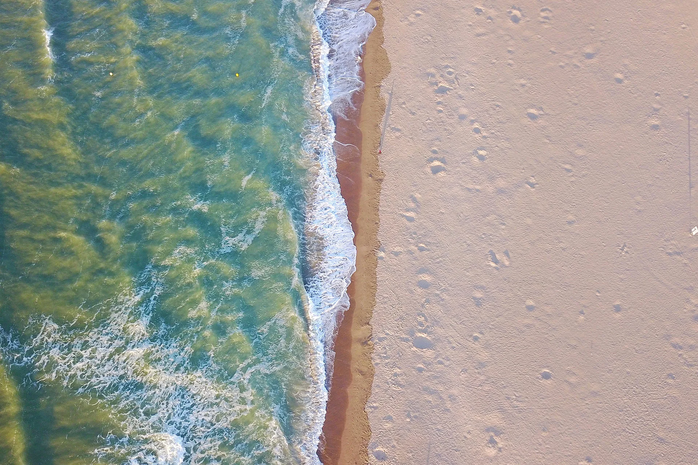
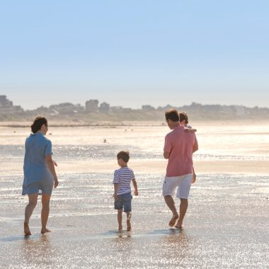

Profiter des grandes plages
Sable fin, baignade et longues promenades face à la mer.
Découvrir →Vivez la Côte Fleurie à votre rythme
Entre mer, nature, loisirs et détente, découvrez quelques-unes des expériences qui rendent un séjour sur la Côte Fleurie unique.
Profiter du littoral et de l'air marin.
Sable fin, baignade et longues promenades face à la mer.
Découvrir →
Observer le littoral changer au fil de la journée.
Découvrir →
Découvrir la côte depuis la mer, au fil des activités nautiques.
Découvrir →Prendre le temps de découvrir les paysages.

Profiter des promenades, digues et chemins du littoral.
Découvrir →
Falaises, panoramas et grands espaces entre mer et campagne.
Découvrir →
Découvrir la Côte Fleurie autrement, à son propre rythme.
Découvrir →Bouger, s'amuser et profiter du territoire.

Jouer dans un cadre entre campagne et littoral.
Découvrir →
Une autre manière de parcourir les paysages normands.
Découvrir →
Des idées pour partager la Côte Fleurie avec les enfants.
Découvrir →Prendre le temps de ralentir.

Profiter des bienfaits de la mer et prendre soin de soi.
Découvrir →Découvrir, sortir et profiter de la vie locale.

Une expérience emblématique des stations balnéaires de la Côte Fleurie.
Découvrir →